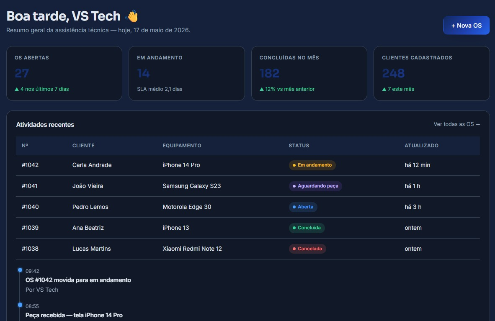

Ordens de serviço
Crie, acompanhe e finalize OS com histórico completo de cada atendimento.
Novo · Versão 2026
O TechOS é o sistema de ordens de serviço feito para técnicos, gestores e clientes trabalharem juntos — do orçamento à entrega.

+2.500
Assistências ativas
+180 mil
OS processadas/mês
98%
Satisfação dos clientes
24/7
Disponibilidade
Recursos
Um conjunto de ferramentas pensado para o dia a dia de quem conserta, gerencia e atende.
Crie, acompanhe e finalize OS com histórico completo de cada atendimento.
Cadastre técnicos, atribua serviços e mantenha o cliente informado.
Seu técnico em campo registra tudo direto pelo celular.
Seus dados protegidos com criptografia e backups automáticos.
Como funciona
01
Crie a conta da assistência em minutos e convide sua equipe.
02
Registre o cliente, equipamento e defeito relatado.
03
Atualize o andamento e o cliente automaticamente.
"Antes do TechOS, a gente perdia OS em cadernos. Hoje atendemos o dobro de clientes com metade do estresse."Vitor Silveira · Dono, VS Tech